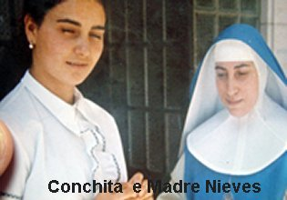
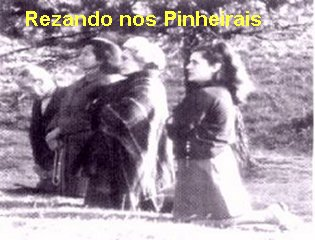
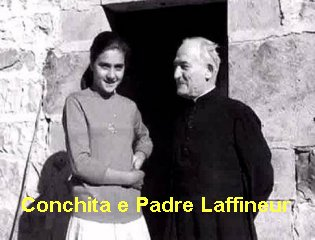
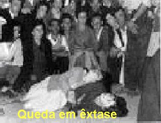
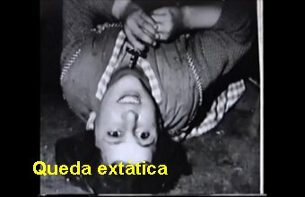
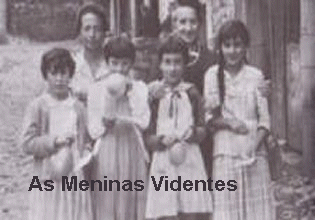
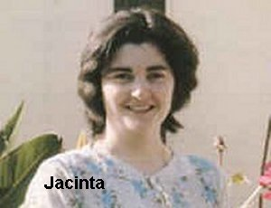
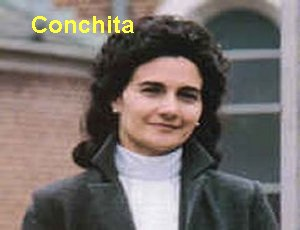

PARA O DIA 18 DE OUTUBRO
PARA O DIA 18 DE OUTUBROMENSAGENS DIVINA
PARA REALÇAR
OS ACONTECIMENTOS, CONCHITA DEU UM SALTO NA DESCRIÇÃO DO SEU DIÁRIO, PULANDO
PARA O DIA 18 DE OUTUBRO
A VISÃO QUER EDUCAR AS MENINAS
Neste dia, as meninas subiram a Estrada dos Pinheirais acompanhadas de todo pessoal (do local e dos peregrinos) às 21:55 horas. A Comissão Diocesana decidiu que a leitura da Mensagem não fosse feita na porta da Igreja como a VIRGEM MARIA pediu. As meninas obedeceram escrupulosamente à ordem da autoridade eclesiástica, porque NOSSA SENHORA sempre lhes ensinava, “sejam obedientes”, a obediência é um precioso e admirável dom Divino. E assim, elas aceitaram ler a Mensagem na “Calleja”. Quando as meninas chegaram, lá estava o Padre Valentim. Primeiro elas deram a Mensagem para ele ler e conhecer o assunto. Depois elas quatro juntas, leram a Mensagem para o povo. Como tinha muita gente e não ouviram com nitidez as palavras, um senhor com voz forte, leu novamente a Mensagem para todos. Em seguida desceram para o “Cercado” e logo que se ajoelharam, NOSSA SENHORA apareceu e lhes disse:
- “Agora quem está duvidando é o Padre Ramón Maria Andreu, S. J”.
Conchita ficou admirada porque o Padre Ramón e seu irmão Padre Luis Maria, também Jesuíta, pela primeira vez subiu a Garabandal nos últimos dias do mês de Julho de 1961, e depois, voltou várias vezes para acompanhar as manifestações sobrenaturais, sendo inclusive, testemunha de vários acontecimentos. Por esse motivo Conchita estranhou a revelação da VIRGEM MARIA.
AGORA, VOLTANDO A SEGUIR O SEU DIÁRIO, CONCHITA RETORNOU AO MÊS DE AGOSTO DE 1961, DANDO CONTINUAÇÃO A SUA EXPOSIÇÃO
VIAGEM A SANTANDER
No inicio de Agosto, Conchita fez contato com o Padre Luis Luna, que era aparentado com sua família, a fim de levá-la a Santander, pois tinha sido convidada pelo senhor Bispo a visitá-lo. Na véspera deste fato, apareceu em Garabandal um Padre com uma túnica totalmente branca e que chamou a atenção de todos, porque nunca um religioso daquela Ordem havia estado lá.
Neste dia, Aniceta, a mãe de Conchita , mandou a filha perguntar a NOSSA SENHORA, se era conveniente que ela, Conchita, fosse a Santander.
Eram seis horas da tarde e as meninas já caminhavam para o “Quadrado” (o reservado que fizeram na “Calleja” para protegê-las), quando encontraram quatro sacerdotes que lhes deram um pacote de caramelos. Enquanto estavam fazendo a divisão das balas, sentiram o “segundo chamado” . Largaram o pacote para trás e “voaram” para o local de costume. Assim que ajoelharam, NOSSA SENHORA apareceu. E como elas estavam curiosas em saber que padre era aquele, vestido de branco, perguntaram a VIRGEM MARIA. Ela não respondeu, apenas sorriu. As meninas curiosas insistiram, e então, Ela disse que era um Padre Dominicano.
Conchita perguntou também se ela
devia ir a Santander, a VIRGEM não disse que não. Na verdade, em Santander, o
povo estava convivendo com a dúvida sobre as Aparições: uns afirmavam que era
auto-sugestão por parte de Conchita e transmitida às demais por eteroindução,
também falavam em hipnotismo, em histeria, e sempre que faziam alguma acusação,
logo desencadeava outras hipóteses, reclamando a necessidade da abertura de um
interrogatório amplo sobre os fenômenos de Garabandal, a fim de deixar aparecer
à verdade. Por isso levaram Conchita para esclarecer muitas  ocorrências, sendo submetida a uma verdadeira prova.
ocorrências, sendo submetida a uma verdadeira prova.
No primeiro dia em Santander, 27 de Julho, no horário que sempre acontecia a Manifestação Sobrenatural em Garabandal, Conchita entrou em êxtase junto a "Igreja de La Consolación" e teve uma Aparição em Santander. Naquele mesmo horário, nos “Pinheirais” em Garabandal, as outras três meninas também tiveram a Aparição e, NOSSA SENHORA lhes disse, que naquele mesmo momento, Ela estava aparecendo a Conchita em Santander. Posteriormente, Conchita contou que em Santander fizeram muitas provas com ela, ou seja, tanto os médicos, como os sacerdotes, fizeram testes de todos os modos, para ver se o êxtase em que ela estava, era verdadeiro ou não.
Terminada a Aparição levaram Conchita para a "Sacristia da Igreja da Consolación" e um sacerdote e um médico lhe fizeram muitas e muitas perguntas. O sacerdote era o Padre Francisco de Odriozola e o médico era Dr. Piñal. Eles falavam com ela:
- “Como é que fazes estas coisas? Está louca? Porque engana o mundo desse modo”?
Depois o Doutor disse:
- “Fica firme e olha no meu nariz, que vou lhe hipnotizar”!
Quando ele disse para ela olhar no nariz dele, Conchita não aguentou, ficou rindo, e então ele zangou dizendo:
- “Não rias, isto não é brincadeira, é coisa séria”.
E assim terminou este dia. Conchita afirma que depois, não lhe fizeram mais perguntas.
No dia seguinte, em companhia de outros médicos, levaram a menina a um médico chamado Dr. Morales, que também na sua sala tinha outros médicos. Ela foi examinada e todos disseram a mesma coisa, que estava tudo bem e que as Aparições eram um sonho. Que ela foi conduzida a Santander para se distrair, a fim de esquecer tudo aquilo que havia passado e assim, não voltaria a ter mais Aparições. A senhora Aniceta, mãe da menina, ficou tão convencida com a palavra dos médicos, acreditando que tudo aquilo era uma fantasia da mente, deixou a filha em Santander e regressou a Garabandal.
Umas sobrinhas e uma irmã do Padre Odriozola, todos os dias iam a casa em que a Conchita ficou hospedada, para levá-la a passear, também na praia, que ela nunca tinha visto antes pois só conhecia o mar pelo nome. Como ela ia todos os dias a praia a VIRGEM não lhe apareceu mais. E assim ficou, até que oito dias depois, um senhor, Dom Emilio Del Valle Egocheaga interferiu, porque sentiu que não era justo e nem correto proceder daquela maneira com uma menina tão pequena, e por isso mandou avisar aos pais dela em Garabandal. Conchita disse que guardará o nome desse homem por toda a sua vida, pelo grande favor que ele lhe prestou. Sua mãe, veio buscá-la, e assim, depois de tudo, todos se portaram bem com ela e terminou a sua visita a Santander com beijinhos e sorrisos.
Quando chegou a Garabandal de regresso, muitos sacerdotes e diversas pessoas foram ao encontro dela, com carinho e alegria, dizendo que a Loli e a Jacinta ouviram da Aparição que ela estava retornando. Então, todos foram recebê-la.
A VOZ NO GRAVADOR
No dia 5 de Agosto de 1961, Conchita e sua mãe, se encontraram com Maximina González, que era madrinha da menina e estava toda assustada e lhes perguntou:
- “Estão comentando que ouviram a voz da VIRGEM no gravador. Vocês souberam”?
- “Que assunto é este”? Elas perguntaram.
Loli e Jacinta que estavam chegando, inquiriram à senhora Maximina:
- “Anda, fala o que é”?
Ela então explicou que se ouviu na fita uma voz suave e meiga dizendo: “Não, não falo”.
As pessoas que estavam presentes, depois da gravação nos “Pinheirais”, dizia a madrinha de Conchita, começaram a chorar muito emocionadas porque diziam terem ouvido a voz da VIRGEM. Na verdade, o que aconteceu foi o seguinte: uma pessoa tinha levado um gravador de pilhas e ensinou o seu funcionamento a Jacinta e a Loli. As duas meninas ficaram admiradas, porque nunca tinham visto coisa igual. Durante o êxtase gravaram as palavras ditas por elas mesmas e, depois, ligaram a reprodução para ouvir. Mas logo em seguida entraram novamente em êxtase e, uma das meninas, estava com o microfone na mão e o aparelho ligado na gravação. Então ficou registrada a conversa delas com NOSSA SENHORA. Foi assim:
- “Tem aqui um homem com um
aparelho que grava tudo. Porque a SENHORA não fala alguma coisa, para que o povo
ouça a TUA Voz? Não é por nós, é por eles, para que
creiam. Fala, diga algo para que creiam”...
por eles, para que
creiam. Fala, diga algo para que creiam”...
Terminado o êxtase, voltaram a ligar o gravador para as meninas escutarem o que haviam falado com a VISÃO. Quando chegou o momento em que as meninas diziam as palavras: “Fala, diga algo para que creiam”... A fita magnética acabou e neste mesmo momento saiu do aparelho uma voz, que as testemunhas classificaram de “suavíssima e doce”, dizendo:
- “Não, não falo”.
E a Loli e Jacinta que estavam presentes, exclamaram ao mesmo tempo:
- “Ui! Parece a Voz da VIRGEM”!
Como é evidente, a impressão causada nas pessoas que estavam próximas e ouviram a admiração das meninas, foi muito grande. Davam-lhes tanta certeza, que uma delas ao regressar ao povoado, disse:
- “Morro hoje com a certeza de ter ouvido a voz da VIRGEM MARIA”.
Como conclusão deste acontecimento, dias posteriores, quando se colocou o gravador para funcionar, não se ouvia mais a Voz da VIRGEM. Assim, qualquer interpretação que se queira dar a esta ocorrência, tem como suporte a assinatura de um documento por doze (12) testemunhas, que presenciaram o fato, firmando a sua plena autenticidade.
DOIS SACERDOTES JESUÍTAS
Descreve Conchita, que nos dias que passou em Santander, apareceram dois Sacerdotes Jesuítas: Padre Ramón María Andréu e o Padre Luis María Andréu, que estavam no meio do povo nos “Pinheirais”, mas que também não acreditavam que ocorressem as Manifestações Sobrenaturais. Na verdade, eles se portavam como a maioria das pessoas que compareciam aos encontros, era levada mais pela curiosidade do que pela fé. E muito embora, ela não estivesse nos “Pinheirais” neste dia, com as outras meninas, Conchita testemunha o fato que aconteceu no dia 28 de Julho, relatando o que ouviu de muitas pessoas que viram o acontecimento.
Loli e Jacinta, nos “Pinheirais”, em êxtase, receberam a Aparição de NOSSA SENHORA. Os dois Padres estando presentes e ao lado das meninas, as observavam em completo êxtase, e assim passaram a acreditar que a VIRGEM estava presente. Principalmente quando passou um pequeno rato e as duas em êxtase nem viram e nem se assustaram com o ratinho. Então Padre Ramón Maria pensou:
- “Se tudo isto é verdade, que uma delas saia do êxtase, ou seja, que a VIRGEM se oculte a ela”.
Imediatamente a Visão se ocultou a Loli e ela saiu do êxtase. Loli olhou sorridente para o sacerdote e aconteceu o seguinte diálogo. Ele perguntou:
- “Você não vê a VIRGEM”?
- “Não senhor. Porque Ela se ocultou”.
A Jacinta continuava em êxtase. Então o Padre falou:
- “Olha a Jacinta”.
Ela olhou e sorriu vendo a amiga em êxtase. Era a primeira vez que uma menina via a outra em êxtase. E o Padre então perguntou:
- “E o que lhe disse a VIRGEM”?
Nesse momento, ela entrou novamente em êxtase, inclinando a cabeça para cima, olhando a VIRGEM. Não lhe respondeu mais nada. A seguir o Padre presenciou um “esclarecedor” dialogo das Meninas entre si, em êxtase e com a Visão. A Jacinta perguntou a Loli:
- “Porque você se foi”?
Loli respondeu perguntando a Visão:
- “Porque a SENHORA se ocultou de mim”?
Houve uma pausa, com um pequeno silêncio. A seguir as duas conversaram com a VIRGEM:
- “Ah! Então é por isso! É para que ele creia”!
 O Padre Ramón que acompanhava tudo atentamente, percebeu, que aquela
ocorrência foi uma providência elaborada pela VIRGEM MARIA, para
fazê-lo crer.
O Padre Ramón que acompanhava tudo atentamente, percebeu, que aquela
ocorrência foi uma providência elaborada pela VIRGEM MARIA, para
fazê-lo crer.
CARINHO DE NOSSA SENHORA
No dia 8 de Agosto as quatro meninas receberam a Visão, e tinha muita gente e, entre elas, o Padre Luís Maria Andreu, um seminarista Andrés Pardo e o Padre Dominicano Royo Marin. Era noite quando NOSSA SENHORA chegou. As meninas em êxtase foram caminhando para os Pinheirais”. Lá chegando, o Padre Luís Maria em altos brados disse: “Milagre! Milagre! Milagre! Milagre!” E ficou olhando para cima, como as meninas em êxtase faziam. Aqui se faz necessário uma explicação: as meninas em êxtase não vêem nada, a não ser a VIRGEM MARIA e elas mesmas, umas as outras. As pessoas que assistem, como é natural só vêem as meninas em êxtase. Como disse Conchita em seu Diário, a MÃE DE DEUS disse a elas, que tinha aparecido ao Padre Luís Maria, e por isso, o motivo da exclamação dele. NOSSA SENHORA mostrou-lhe também, por antecipação “O Grande Milagre”. Esta manifestação da VIRGEM foi um prêmio ao Padre Luís Maria, que era um sacerdote exemplar e digno de todos os encômios, sobretudo, ele verdadeiramente amava DEUS e nossa MÃE SANTÍSSIMA.
O AVISO, O GRANDE MILAGRE, O CASTIGO
Antes de acontecer “O Grande Milagre” , haverá “Um Aviso” . Numa carta de Conchita com data do dia 2 de Junho de 1965, ela aborda este acontecimento.
“Antes do GRANDE MILAGRE, a VIRGEM MARIA me disse no dia 1º de Janeiro de 1965, que haverá um “AVISO” para que o mundo se converta. Este “AVISO” é como um “Castigo Suave”, que deve ser temido pelas pessoas boas e más. Aos bons deve soar como um convite para ser mais amoroso e fiel a DEUS. Para os maus, servirá para lhes avisar de que virá um “GRANDE CASTIGO”, e que aquele será o último “AVISO” para toda humanidade. O acontecimento é muito grande, não se pode dizer por carta, em duas palavras. E também, ele não resgata nada daquilo que está para acontecer, ou seja, que já está programado. É certo que o “AVISO” virá e abrangerá o mundo inteiro. A humanidade compreenderá que ele, o “AVISO”, vem de DEUS. Eu não sei o dia e nem a data quando acontecerá”. (Conforme o Diário de Conchita)
Ela acrescenta, que no “AVISO” veremos todo o mal que praticamos contra DEUS através de nossos pecados, que agravaram terrivelmente a Paixão de NOSSO SENHOR.
Depois deste “AVISO” virá “O GRANDE MILAGRE” que Conchita menciona no seu Diário. NOSSA SENHORA revelou-lhe a data deste extraordinário acontecimento e autorizou a Conchita dizer em segredo esta data a sua mãe Aniceta e a duas pessoas em Roma. E também, com oito (8) dias de antecedência, Conchita revelará ao mundo a realização do “GRANDE MILAGRE”. Será uma ocorrência muito grande, vista em Garabandal e sobre os montes que circundam a pequena cidade. Será numa quinta-feira, coincidindo com a Festa de um Santo Mártir relacionado com a Eucaristia. Também coincidirá com um grande acontecimento da Igreja. Este acontecimento já teve lugar na existência da Igreja, mas não na vida de Conchita. Será as 20:30 horas, que foi o horário da primeira Aparição em Garabandal. Terá a duração de 10 a 15 minutos. Deixará um “SINAL” permanente na Terra, que por si mesmo será um "Milagre Permanente". Não serão necessários que Conchita e nenhuma das outras três meninas estejam presentes ao Milagre, que DEUS fará por intercessão da VIRGEM MARIA. Os enfermos que estiverem presentes se curarão e os incrédulos recuperarão a fé. O Padre Pio e o Papa verão o Milagre, desde onde estiverem. Depois deste “GRANDE MILAGRE” , se o mundo não se converter, DEUS enviará um “GRANDE CASTIGO”.
MORTE DO PADRE LUÍS MARIA
Certo dia estava às quatro meninas varrendo a Igreja, quando de repente, surgiu a mãe da Jacinta, muito assustada, dizendo que o Padre Luís Maria Andreu tinha morrido. As meninas pararam com a limpeza e comentaram: “Ontem ele esteve conosco aqui”!
E juntas com as outras pessoas, foram participar do sepultamento dele. Disseram às pessoas que as últimas palavras do Padre foram:
- “Hoje é o dia mais feliz da minha vida! Que Mãe carinhosa temos no Céu”! Depois morreu.
(Este Padre era professor de Teologia na Faculdade que a Companhia de JESUS tinha na Província de Burgos, na Espanha. Tinha feito estudos em Oña (Espanha), Innsbruck (Áustria) e em Roma (Itália). Quando morreu tinha 36 anos de idade. Foi a Garabandal pela primeira vez nos últimos dias do mês de Julho, como já mencionamos, e voltou no dia 8 de Agosto. Neste dia, o Padre Valentim lhe deu as chaves da Igreja, pois teria que se ausentar de Garabandal. Na tarde do dia 8 de Agosto acompanhou um êxtase das quatro meninas que começou na Igreja. Depois elas saíram numa “marcha extática” de longa duração. Paravam nos lugares onde anteriormente tiveram Aparições e ali rezavam. O Padre Luís Maria seguiu todo o êxtase das meninas. A seguir subiram para os "Pinheirais” e o Padre também foi junto. Estando ali nos “Pinheirais” (Calleja ou Quadrado), o Padre Luís María pela Vontade de DEUS, também entrou no “Campo de Visão das meninas”. Fato que já foi mencionado acima, quando vendo NOSSA SENHORA, ele exclamou quatro vezes a palavra “Milagre”! Tinha a voz um tanto apagada semelhante a das meninas, quando estavam em êxtase. E elas, depois descreveram como viram o Padre Luís Maria seguindo os passos delas:
- “Ele estava como se tivesse rodinhas nos pés, e o suor, corria caudaloso por sua face. A VIRGEM MARIA olhava ternamente para ele, como se dissesse: EM BREVE ESTARÁS COMIGO”.
Um Terço que o Padre Luís Maria deixou com Loli para a VIRGEM beijar, se perdeu na montanha. O êxtase terminou na Igreja e Loli disse ao Padre:

- “Perdi o seu Terço, mas a VIRGEM MARIA me disse onde está. Vamos lá buscá-lo”.
Como já passavam das 10 horas da noite, Julia, a mãe de Loli falou:
- “Não agora. Melhor será amanhã com a luz do dia”.
E o Padre Luís Maria concordou e disse:
- “Sim! Melhor amanhã com a luz do dia. E você encontrando-o não dê a ninguém só ao meu irmão, ainda que eu não esteja aqui, mas meu irmão estará”.
Assim fez Loli no dia seguinte. Encontrou o Terço exatamente no lugar indicado por NOSSA SENHORA. Guardou o Terço e entregou ao irmão dele, Padre Ramón.
A morte do Padre ocorreu assim: nesta mesma noite, depois das 22 horas, o Padre Luís Maria viajou de Garabandal a Cosío de jeep. Ali esperou os que vinham a pé pela estrada. Dentro do jeep esperou até a uma hora da madrugada, quando chegou o Padre Valentim. Este se aproximou do veiculo para lhe perguntar algo, e o Padre Luís Maria disse:
- “Padre Valentim, o que as meninas dizem é verdade, mas ainda não divulgue nada, porque toda a prudência da Igreja nestes casos, deve ser a maior possível”.
(Esta frase, Dom Valentim escreveu no seu diário, na mesma noite que teve a noticia da morte do Padre Luís Maria).
Ainda na noite da ocorrência, na estrada de Cosío à Aguilar de Campo seguia uma caravana com quatro veículos, e entre eles estava o Padre Luís Maria. No carro em que viajava, haviam mais três pessoas. E o Padre Luís Maria conseguiu dormir um pouco. Ao despertar, disse:
- “Eu tive um sonho maravilhoso. Descansei bem, não estou nem um pouco cansado”.
Chegaram a Reinosa as quatro horas da madrugada. Ali, todos os carros pararam a entrada do povoado, onde tinha uma fonte de água. Desceram para beber um pouco, enquanto o Padre Luís Maria permaneceu no carro com a porta aberta, pois não estava com sede. E logo, ele foi rodeado pelas demais pessoas que lhe fizeram perguntas sobre o que tinha visto. O Padre permaneceu em silêncio, com um ligeiro sorriso na face. No momento de continuar o trajeto, o carro onde viajava o Padre Luís Maria saiu em ultimo lugar. Dentro do lugarejo, conversando com as pessoas dentro do mesmo carro, o Padre Luís disse:
- “Estou cheio de alegria! Que presente a VIRGEM me deu! Que sorte ter uma Mãe assim no Céu! Não devemos ter medo da vida sobrenatural. As meninas nos têm ensinado como devemos tratar a VIRGEM. Para mim já não existe mais dúvida. Por que será que a VIRGEM nos escolheu? Hoje é o dia mais feliz da minha vida”. Assim que falou estas palavras levantou a face para o Céu. Como ele não falava mais nada, perguntaram:
- “Padre, aconteceu alguma coisa”? Ele respondeu:
- “Não, nada, foi um lindo sonho”. E dizendo isto abaixou a cabeça.
José Salceda, o motorista virando o rosto para vê-lo, disse:
- “Ai! O Padre está muito mal. Está apagando os seus olhos”!
Ali mesmo tinha uma Clínica Oftalmológica. Mas nada se pode fazer, do que constatar a autenticidade de sua morte. Não se conhecia nele nenhuma enfermidade. Morreu, podemos dizer, como se estivesse dormindo. Tinha no rosto um leve sorriso de felicidade. Entretanto, a história deste Padre e de Garabandal, não terminou com a morte dele. As meninas falavam frequentemente com ele, conforme se pode observar pelo “Diário de Conchita”. O mais surpreendente é que a VIRGEM MARIA comunicou a Conchita que no dia seguinte ao “Grande Milagre”, o corpo deste Padre será exumado e aparecerá o seu “corpo incorrupto”. Conchita escreveu este fato numa carta:
- “No dia 18 de Julho tive uma alocução interior e nela me foi dito que no dia seguinte ao “GRANDE MILAGRE” irão tirar o Padre Luís Maria da tumba e seu corpo estará incorrupto”.
A mãe do Padre, 40 dias após o sepultamento do filho, no mês de Outubro de 1961, entrou na clausura da Ordem Religiosa da Visitação, em San Sebastian de Garabandal tornando-se monja.
Passados alguns dias da morte do Padre Luís Maria, a SANTÍSSIMA VIRGEM MARIA disse às meninas que elas iam conversar com ele.
Perguntado ao Padre Ramón Maria, irmão do Padre falecido, sobre as conversas do irmão falecido com as meninas, ele disse que presenciou algumas, e que ficou surpreso e agradecido a misericórdia infinita do SENHOR.







